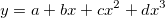
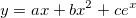
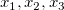

Lineare und polynomielle Regression
Linear-Polynomial-Regression
Übersicht
Die lineare und polynomielle Regression berechnen die am besten angepasste Linie für einen oder mehrere XY-Datensätze. Außerdem kann die mehrfache lineare Regression verwendet werden, um die Beziehung zwischen mehreren Prädiktorvariablen und einer Antwortvariablen zu untersuchen.
Die Parameter werden mit der Methode der gewichteten kleinsten Quadrate geschätzt. Die Gewichtung kann der abhängigen Variablen in der Anpassung zugewiesen werden, um den Einfluss der einflussreichen Datenpunkte zu reduzieren. Nach dem Anpassen wird das Modell mit Hypothesentests und dem Zeichnen von Residuen ausgewertet.
Anpassung durchführen
Anpassungssteuerung
Lineare Regression für Daten mit X/Y-Fehler durchführen
- Fehler können sowohl für abhängige als auch unabhängige Werte existieren. Fehler der abhängigen Variable Y können als Gewichtung in allen Anpassungshilfsmittel oben behandelt werden, indem Sie die Spalte des Y-Fehlers als Y-Fehlerunter Eingabedaten festlegen und die Methode des Fehlers als Gewichtung unter Fit-Steuerung zuweisen.
- Wenn Sie jedoch Fehler der unabhängigen Variable X als Gewichtung behandeln möchten, sollte das Hilfsmittel Lineare Anpassung mit X-Fehler verwendet werden, mit dem Sie sowohl X- als auch Y-Fehler in den Eingabedaten festlegen und als Gewichtung behandeln können. Weitere Informationen finden Sie auf dieser Seite.
Lineare/polynomielle Anpassung mit festgelegten Parametern durchführen
- Anpassungsparameter können in den obigen Hilfsmitteln festgelegt werden. Zum Beispiel können Sie den Wert des Schnittpunkts mit der Y-Achse auf 0 festlegen, indem Sie das Kontrollkästchen Fester Schnittpunkt mit der Y-Achse im Dialog Fit-Steuerung aktivieren und Fester Schnittpunkt mit der Y-Achse bei = 0 setzen, wodurch die angepasste Linie "gezwungen" wird, durch den Ursprungspunkt (0,0) zu verlaufen. Davon abgesehen wird das Modell Freiheitsgrad aufgrund des festen Parameters reduziert.
Lineare/polynomielle Anpassung auf einem Diagramm gemäß der aktuellen Achseneinstellungen durchführen
- Sie können eine lineare/polynomielle Anpassung auf einem Diagramm gemäß der aktuellen Achseneinstellungen durchführen, indem Sie das Kontrollkästchen Scheinbarer Fit im Dialog Fit-Steuerung aktivieren.
- Der Scheinbare Fit transformiert Ihre Rohdaten zuerst in einen neuen, im Diagrammachsentyp festgelegten Datenraum und passt die Kurve dann nach den neuen Daten an.
- Hier ist ein Beispiel für das Suchen der Steigung im Log-Log-Diagramm mit dem scheinbaren Fit.
X-Datentyp für das angepasste Kurvendiagramm definieren
- Sie können die Skalierungen der X-Achse, das Intervall der angepassten Kurven und den Bereich unter Angepasstes Kurvendiagramm: X-Datentypen definieren.
Beratung und Tipps
Anpassungskurve durch einen festgelegten Punkt "zwingen"
-
Es gibt zwei Methoden, um eine angepasste Kurve für die lineare und polynomielle Regression durch bestimmte Punkte zu führen:
-
- Um die angepasste Kurve durch den Ursprung (0,0) gehen zu lassen, können Sie einfach den Schnittpunkt mit der Y-Achse für das lineare oder polynomielle Modell auf 0 festlegen.
- Um die angepasste Kurve durch einen bestimmten Punkt in den Rohdaten zu "zwingen", können Sie eine höhere Gewichtung für den Punkt festlegen.
- Weitere Informationen finden Sie auf dieser Seite.
Mehrfache lineare Regression mit Grenzen bzw. Nebenbedingungen durchführen
- Sie können eine mehrfache lineare Regressionsfunktion definieren und Nebenbedingungen für sie im Hilfsmittel Nichtlinearer Fit festlegen.
- Bitte lesen Sie weitere Einzelheiten auf dieser Seite.
Ausreißer in Anpassungsprozess identifizieren
- Wenn Sie die angepasste Kurve erhalten, kann es zu einem großen Unterschied zwischen einigen Punkten und der angepassten Kurve durch das Modell kommen. Diese Punkte sollten als Ausreißer identifiziert werden.
- Bei der linearen Anpassung können Ausreißer in der Ergebnistabelle gezeigt werden, indem das Kontrollkästchen Ausreißer im Dialog Lineare Anpassung aktiviert wird. Oder Sie können das Q-Q-Diagramm verwenden, um einen Ausreißer zu identifizieren. Lesen Sie hier eine Einführung dazu. Sie können die Ausreißer auch aus einer Analyseroutine ausschließen.
X von Y finden oder Y von X finden
- Die Tabelle X/Y suchen erlaubt es Ihnen, aus dem Fit, den Sie für die Daten ausgeführt haben, entweder einen abhängigen Variablenwert bei gegebenem unabhängigen Variablenwert oder einen unabhängigen Variablenwert bei gegebenem abhängigen Variablenwert zu erhalten.
Weiteres
Ergebnisse interpretieren
Siehe Kapitel Regressionsergebnisse für folgende Informationen.
Algorithmus
Algorithmus (Lineare Regression)
Algorithmen (Lineare Anpassung mit X-Fehler)
Algorithmus (Mehrfache Lineare Regression)
Algorithmus (Polynomielle Anpassung)
Erweitert: Lineare Anpassung für nichtlineare Modelle
Sie können die analytische Lösung einer Gleichung erhalten, wenn die Gleichung mehrere Terme mit linearen Parametern enthält.
Zum Beispiel: die polynomielle Gleichung: 
oder eine allgemeinere Formel 
Anstatt das Hilfsmittel NLFit für eine iterative Lösung zu verwenden, können Sie die linearen Terme als unterschiedliche unabhängige Variablen (wie  etc.) behandeln und die Hilfsmittel Mehrfache lineare Regression oder Polynomieller Fit verwenden, um eine Regression mit mehreren linearen Termen durchzuführen und eine analytische Lösung zu erhalten. Hier ist eine Fallstudie zum Thema Wie wird eine reziproke Funktion in eine Gleichung mit linearen Parametern übertragen?
Aufgrund verschiedener Beiträge zu der Summe der Fehlerquadrate für Punkte in zwei Modellen sind die Schätzungsergebnisse für Parameter jedoch unterschiedlich zwischen der direkt durchgeführten Anpassung und der transformierten Anpassung mit linearem Anteil. Einzelheiten finden Sie auf dieser Seite.
|
Themen, die in diesem Abschnitt behandelt werden:
|